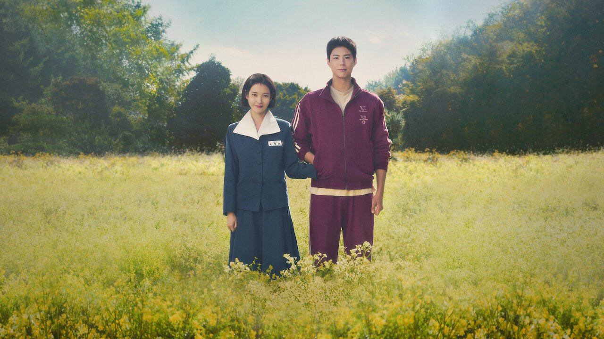

안녕하세요 라보엠입니다.
요즘 넷플릭스 시리즈 폭싹 속았수다가 참 인기죠? 우리 부모님 세대의 처절한 삶의 이야기를 주인공 애순이(아이유)와 관식이(박보검)를 통해 보여주고 있는데요, 저도 매주 4편씩 나오는 이야기에 푹 빠져 있습니다. 그런데 얼마전 KBS 가요무대에 아이유와 박보검이 출연하여 예민의 노래 산골 소년의 사랑 이야기를 불렀습니다. 교복을 입고 주인공 애순이와 관식이의 모습으로 출연한 두 사람은 드라마의 컨셉을 그대로 가져와 이야기속에서 튀어난 모습으로 옛 노래를 부르며 듣는 이들에게 감동을 주었습니다.
가요무대 아이유(애순) + 박보검(관식) ? 산골 소년의 사랑 이야기(원곡: 예민)
2025년 3월 10일, KBS 1TV '가요무대'는 봄을 맞이하는 특별한 무대를 선보였습니다. 이날의 주인공은 넷플릭스 드라마 '폭싹 속았수다'의 주연 배우인 아이유와 박보검입니다. 두 사람은 1970년대 교복 차림으로 등장하여, 마치 드라마에서 튀어나온 듯한 모습을 보여주며 시청자들의 마음을 사로잡았습니다.
아이유와 박보검은 예민의 1992년 발표곡 '산골 소년의 사랑 이야기'를 듀엣으로 불렀습니다. 이 곡은 산골을 배경으로 한 사춘기 소년소녀의 순수하고 슬픈 첫사랑을 동화 같은 가사와 슬픈 멜로디로 묘사한 곡입니다. 특히, 이 곡은 황순원의 소설 '소나기'의 분위기를 연상시킬 수 있지만, 실제로는 예민의 어린 시절을 떠올리며 쓴 곡입니다.
두 사람은 풋풋한 케미스트리로 시청자들에게 뭉클한 향수를 자아냈습니다. 박보검의 감미롭고 부드러운 음색은 시청자들을 놀라게 했으며, 아이유의 노래 실력은 이미 잘 알려진 사실입니다. 이들의 듀엣 무대는 드라마 '폭싹 속았수다'의 주제곡과도 같은 느낌을 주며, 시청자들에게 큰 감동을 안겼습니다.
넷플릭스 드라마 '폭싹 속았수다'
폭싹 속았수다 | 넷플릭스 공식 사이트
당차고 요망진 소녀와 무쇠처럼 우직하고 단단한 소년. 제주 바닷가 작은 마을에서 한 뼘씩 자라온 둘의 인생은 어디로 향할까. 넘어지고 좌절해도 다시 일어서며, 세월을 뛰어넘어 피어나는 사
www.netflix.com
드라마 '폭싹 속았수다'는 1960년대부터 시작되는 시대 배경을 가지고 있으며, 남녀의 사랑뿐만 아니라 가족과 이웃, 당시 시대상을 담아내는 연출이 특징입니다. 이 드라마는 현재 넷플릭스 TV쇼 부문에서 12개국에서 1위를 기록하며 큰 화제를 불러일으키고 있습니다. 박보검과 아이유의 듀엣 무대는 드라마의 첫 막이 끝난 직후에 이루어졌으며, 타이밍이 너무나 좋았습니다 두 사람이 부른 '산골 소년의 사랑 이야기'는 드라마의 분위기와 정서와도 너무나 잘 맞아떨어졌습니다.

산골 소년의 사랑 이야기 노래 가사
풀잎새 따다가 엮었어요
예쁜 꽃송이도 넣었구요
그대 노을빛에 머리곱게 물들면
예쁜 꽃모자 씌워주고파
냇가에 고무신 벗어놓고
흐르는 냇물에 발담그고
언제쯤 그애가
징검다리를 건널까하며
가슴은 두근거렸죠
흐르는 냇물위에 노을이
분홍빛 물들이고
어느새 구름사이로
저녁달이 빛나고 있네
노을빛 냇물위엔
예쁜 꽃모자 떠가는데
어느 작은 산골소년의 슬픈 사랑얘기
풀잎새 따다가 엮었어요
예쁜 꽃송이도 넣었구요
그대 노을빛에 머리곱게 물들면
예쁜 꽃모자 씌워주고파
냇가에 고무신 벗어놓고
흐르는 냇물에 발담그고
언제쯤 그애가
징검다리를 건널까하며
가슴은 두근거렸죠
흐르는 냇물위에 노을이
분홍빛 물들이고
어느새 구름사이로
저녁달이 빛나고 있네
노을빛 냇물위엔
예쁜 꽃모자 떠가는데
어느 작은 산골소년의 슬픈 사랑얘기
노을빛 냇물위엔
예쁜 꽃모자 떠가는데
어느 작은 산골소년의 슬픈 사랑얘기
맺음말
박보검과 아이유의 '산골 소년의 사랑 이야기' 듀엣 무대는 가요무대에서 봄을 맞이하는 특별한 선물과도 같았습니다. 두 사람의 풋풋한 케미스트리와 감미로운 음색은 시청자들에게 깊은 감동을 안겼으며, 앞으로도 두 사람이 함께하는 무대를 기대하게 합니다. 특히, 이번 무대는 드라마 '폭싹 속았수다'와의 연결고리로도 큰 의미를 가졌습니다. 이번 듀엣 무대는 드라마의 주제곡과도 같은 감동을 주었으며, 앞으로도 계절마다 관련된 명곡을 선정해 두 사람이 함께 무대에 서기를 기대하고 있습니다. 특히, 이번 무대는 특별한 이벤트로 느껴졌으며, 두 사람의 풋풋한 케미스트리와 감미로운 음색은 시청자들에게 깊은 감동을 안겼으며, 앞으로도 두 사람이 함께하는 무대를 기대하게 합니다.